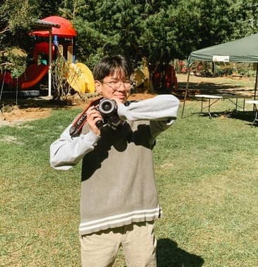
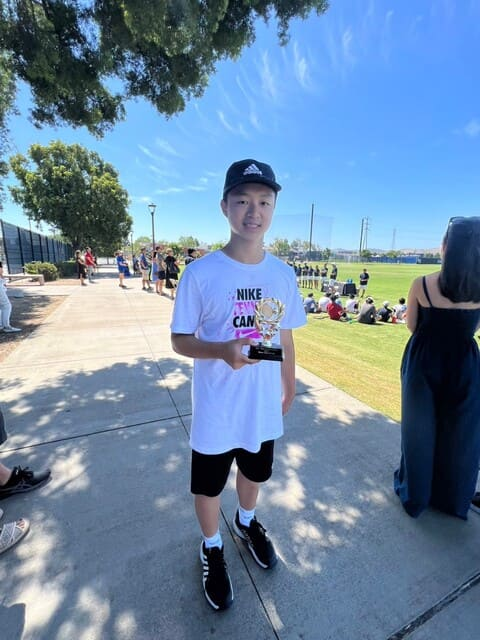
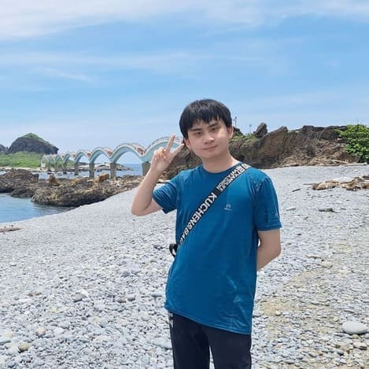
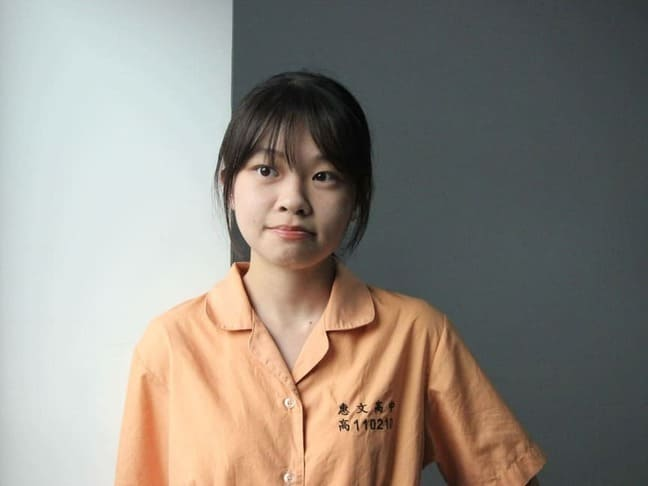
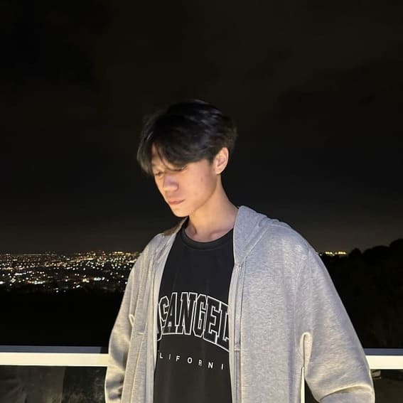
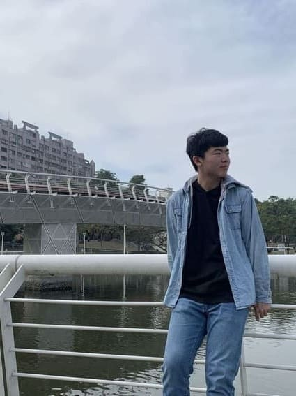
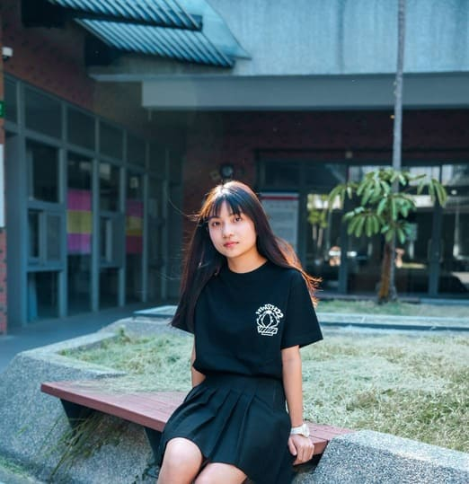
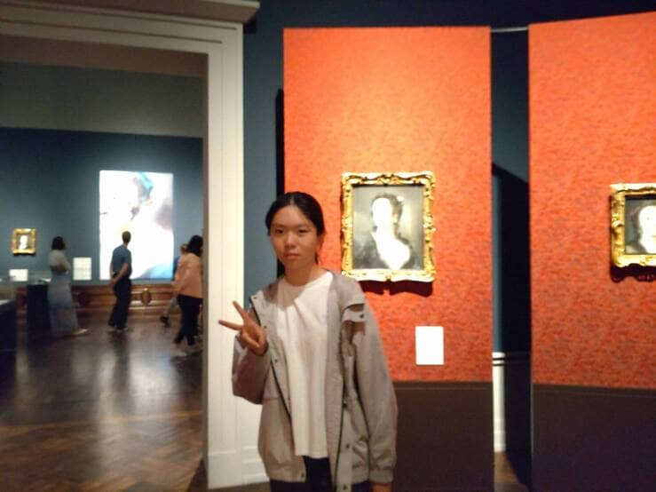

A.M.00:00:00
1900/01/01
1900/01/01
HUANG,YUN-DE
Job Responsibilities:
Leadership, coordination, task allocation, video shooting, video production
Leadership, coordination, task allocation, video shooting, video production
In this web competition, it was the largest project I've ever led in terms of data volume. As a
leader, I had to maintain a high vantage point to see what others couldn't see, while also being
attentive to every detail. The agility to switch between these two different roles and
persistent communication without giving up were my greatest learning experiences. Additionally,
this was my first time producing an interview-style video, which differed from my previous
experiences in making short films. It required more time to contemplate the message conveyed by
the interviewees and to edit it into a cohesive presentation for the audience. Throughout the
production process, there were many challenges, but I am grateful for the support of my team
members and the careful guidance of our supervisor, which allowed us to successfully complete
the project.

CHEN,SIN-JIE
Job Responsibilities:
Data organization, text editing
Data organization, text editing
Participating in this international web competition was a significant challenge for me, testing
my ability to collaborate effectively. As the leader of the text team, I learned how to enhance
my skills in drafting written content and delegating tasks to team members. I also gained
valuable insights into crafting interview outlines before interviews and drafting transcripts
afterward, which proved to be immensely beneficial. Finally, I am grateful to our director,
teachers, and fellow members of the web competition for their collaborative efforts in
completing this project.

LI, CHENG-RU
Job Responsibilities:
Web design, webpage creation, managing webpage hosting
Web design, webpage creation, managing webpage hosting
I often find myself admiring unique design elements or attractive color schemes when browsing
various websites. I make it a point to inspect them closely using developer tools to understand
their intricacies. This habit has enabled me to develop my skills, and I collaborated well with
the main graphic designer for this project. Although occasionally the layout of my work may
differ from my initial expectations, I view these instances as stepping stones in my journey of
learning web design.
This web design project posed a considerable challenge for me. Unlike the previous year's web competition, where I modified templates, this time I built the entire webpage from scratch, including its functionality and layout. Additionally, I utilized this web competition as an opportunity to modularize some of the JavaScript functions within my webpage, making them more adaptable for future projects.
This web design project posed a considerable challenge for me. Unlike the previous year's web competition, where I modified templates, this time I built the entire webpage from scratch, including its functionality and layout. Additionally, I utilized this web competition as an opportunity to modularize some of the JavaScript functions within my webpage, making them more adaptable for future projects.

LIN,JHIH-YUN
Job Responsibilities:
Web design, Text layout
Web design, Text layout
Before participating in the web design competition, I had always been passionate about web
design and text layout. I often carefully observed various websites with sophisticated designs
to understand their intricacies and techniques.
The graphic design work this time was different from what I had learned in class, leaning more towards practicality. I learned how to divide graphics into different sections for use by programmers. Additionally, I learned how to clearly highlight the key points in the visuals. These required me to adopt a different perspective and evaluate design styles and steps from the viewer's standpoint.
Through participating in the web design competition, I realized the importance of communication and coordination with others or future clients. I will apply the experiences gained from this to future work, enabling me to collaborate more effectively with others and produce even better results!
The graphic design work this time was different from what I had learned in class, leaning more towards practicality. I learned how to divide graphics into different sections for use by programmers. Additionally, I learned how to clearly highlight the key points in the visuals. These required me to adopt a different perspective and evaluate design styles and steps from the viewer's standpoint.
Through participating in the web design competition, I realized the importance of communication and coordination with others or future clients. I will apply the experiences gained from this to future work, enabling me to collaborate more effectively with others and produce even better results!

LI,CHENG-HSIEN
Job Responsibilities:
Data organization, Data analysis
Data organization, Data analysis
This web competition was perhaps the largest-scale competition I've ever participated in! The
importance of collaboration and division of labor became even more apparent. Compared to the
tasks of the text team, data analysis seemed almost trivial. During the analysis process, the
absence of Excel and AI would have left us feeling lost. Utilizing information tools effectively
may indeed be a survival skill required of us in this century! I am also grateful for the
cooperation of our team leader and members. Timely sharing of opinions allowed us to complete
the work as planned. Each person was an indispensable part during this period. Without any one
of us, the results achieved today would not have been possible!

TSAI,YI-JUI
Job Responsibilities:
Data organization, Data analysis
Data organization, Data analysis
This web competition has been the most profound experience of teamwork I've encountered in my
life so far. Tasks that could have been easily completed by one or a few individuals in school
turned out to be on a much larger scale this time, leading to a much finer division of labor
among us.
During the process of data analysis, I learned that ChatGPT is not a universal solution. Despite providing it with the same data, it often generated a variety of strange and unexpected results. This meant that I had to put in extra effort to sift through and interpret the data.
This competition also taught me the importance of addressing issues promptly when given the opportunity, as delaying them might leave us with even less time to handle them later.
I want to express my gratitude to my teammates and our mentors for their assistance. It's thanks to all of you that we were able to successfully complete this competition.
During the process of data analysis, I learned that ChatGPT is not a universal solution. Despite providing it with the same data, it often generated a variety of strange and unexpected results. This meant that I had to put in extra effort to sift through and interpret the data.
This competition also taught me the importance of addressing issues promptly when given the opportunity, as delaying them might leave us with even less time to handle them later.
I want to express my gratitude to my teammates and our mentors for their assistance. It's thanks to all of you that we were able to successfully complete this competition.

CHIOU,YU-CHIAU
Job Responsibilities:
Text editing
Text editing
Participating in this international web competition has been the largest-scale competition I've
ever been involved in! In this project, I was responsible for text editing. This involved
researching relevant information and organizing multiple sources into clear and understandable
text, allowing others to better understand our project. I also wrote interview scripts to ensure
that the interviews captured the key points we wanted to address clearly. Through this
experience, I learned how to better express my ideas and how to write interview scripts that
help interviewees understand our intentions more clearly. I am also very grateful for the
assistance and guidance provided by other team members, which enabled the smooth progress of
this project and allowed me to benefit greatly from it.

CHEN, JIA-JUN
Job Responsibilities:
Text editing
Text editing
In this project, my role was text editing. Throughout my involvement, I needed to research
relevant information and transform it into written content to help readers better understand the
topic at hand. This process not only enhanced my research and writing skills but also cultivated
my ability to translate professional knowledge into understandable text. The listening skills I
developed during interviews allowed me to better comprehend the perspectives and experiences of
others. I am grateful to all the classmates and teachers who collaborated with me. It's because
of everyone's teamwork that we were able to complete this project successfully.
